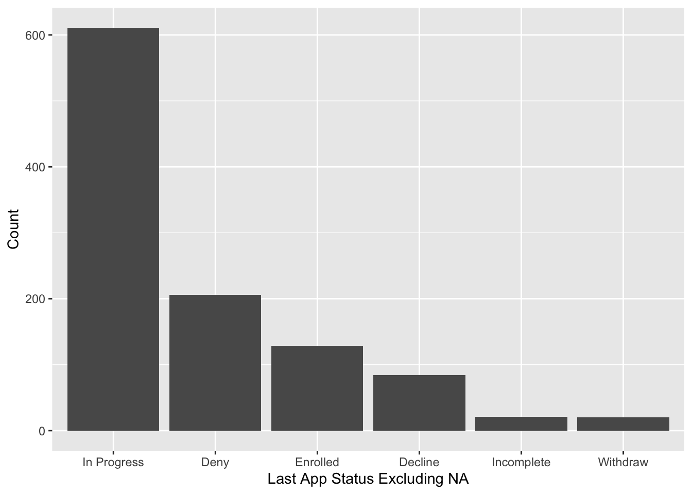
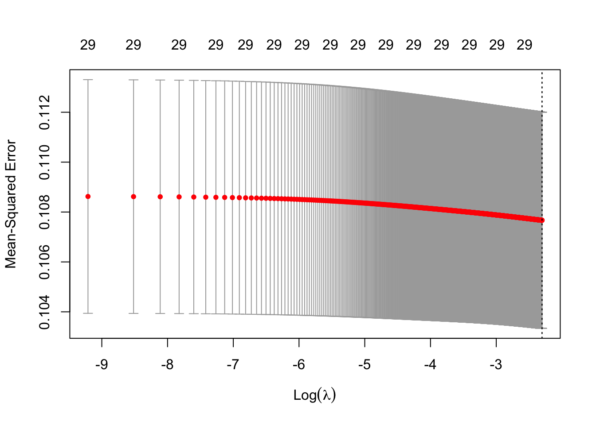

UCI Merage Online Advertising Analysis
Huiyin(Cloris) He
3/26/2021
Part 1. Lead Source Analysis
Lead Source: the source of applicants enter the system
A. Exploratory Data Analysis
# FT VS FE
ggplot(data,aes(x = Program)) + geom_bar()# Distribution of inquiry and application stages
ggplot(data,aes(x = forcats::fct_infreq(`Student Stage`))) + #infreg sort by freq
geom_bar() +
labs(x = "Application Stages", y = "Count") # Application each year
ggplot(data, aes(x = `start_year`)) +
geom_bar() +
labs(x = "Account Created in _ Year", y = "Count")# Application each month
ggplot(data, aes(x = `start_month`)) +
geom_bar() + labs(x = "Account Created in _ Month", y = "Count") # Application stages breakdown by year
ggplot(data, aes(x = forcats::fct_infreq(`Student Stage`))) +
geom_bar() +
facet_wrap(facets = vars(start_year)) +
labs(x = "Application Stages", y = "Count")# Application stages breakdown by Program
ggplot(data, aes(x = forcats::fct_infreq(`Student Stage`))) +
geom_bar() +
facet_wrap(facets = vars(Program)) +
labs(x = "Application Stages", y = "Count")# Distribution of application status
ggplot(data,aes(x = forcats::fct_infreq(`Last App Status`))) +
geom_bar()ggplot(data[!is.na(data$`Last App Status`),],
aes(x = forcats::fct_infreq(`Last App Status`))) +
geom_bar() +
labs(x = "Last App Status Excluding NA", y = "Count")
### Sankey diagram for an overall understanding ####
links <- data.frame(
source=c("Potential applicants","Potential applicants", "Applied", "Applied",
"Applied", "Applied", "Applied", "Archived (with result)",
"Archived (with result)", "Archived (with result)", "Inquired only",
"Inquired only","Inquired only","Inquired only"),
target=c("Inquired only","Applied", "Archived (with result)", "Incomplete",
"In Progress", "Withdraw", "<NA>","Deny", "Decline", "Enrolled",
"<NA>", "In Progress", "Incomplete", "Withdraw"),
value=c(5114,1171, 418, 1, 7, 1, 743, 206, 84, 129,4471, 604,20, 19)
)
nodes <- data.frame(
name=c(as.character(links$source),
as.character(links$target)) %>% unique()
)
links$IDsource <- match(links$source, nodes$name)-1
links$IDtarget <- match(links$target, nodes$name)-1
p <- sankeyNetwork(Links = links, Nodes = nodes,
Source = "IDsource", Target = "IDtarget",
Value = "value", NodeID = "name",
sinksRight=FALSE)
pFrom the Sankey diagram, we see that a majority of the applicants do not apply but instead submit an inquiry to learn more about the programs offered.
From our dataset, out of the 6,285 people, 81% inquired but less than 20% actually apply. Among those who applied, 35% of the applications are archived meaning the application process is complete. Of those who submitted an application, half of them were denied, 20% declined the school’s offer, while 30% enrolled into the program. We also observed that only 2% of those who inquired will also enroll into the program.
# Distribution of salutation
ggplot(data,aes(x = Salutation)) + geom_bar()# Distribution of the lead source
table(data$`Lead Source`,useNA = "always")##
## Events Facebook Forte Forum
## 4 24 38
## GMASS List Upload GMAT Score Sender Grad Fair
## 192 73 92
## GRE Score Sender Hobsons Legacy Data Internal Inquiry Form
## 30 99 274
## LinkedIn Online Application Online Event Registration
## 32 2318 723
## Other Qualified List Upload Unqualified List Upload
## 2 1065 18
## Web Inquiry Form World MBA Tour YouVisit
## 747 545 9
## <NA>
## 0# lead source with our category
table(data$lead_categ,useNA = "always")##
## events online others scores social uploads <NA>
## 1364 3103 11 103 56 1648 0# Distribution of the time it takes to apply, excluding inquiries
ggplot(data[data$`Student Stage` != "Inquiry",],
aes(x = duration, fill = `Last App Status`)) +
geom_histogram(bins = 20, position = "stack") +
labs(x = "Duration (days)", y = "Count")# subset: look at data between 100 - 500 days
ggplot(subset(data[data$`Student Stage` != "Inquiry",],
duration>=100 & duration < 500),
aes(x = duration, fill = `Last App Status`)) +
geom_histogram(bins = 20, position = "stack") +
labs(x = "Duration (days)", y = "Count")We observed the duration of time applicants took to apply. The bar chart shows the number of days it took to apply versus the frequency of applicants. Because most of the data points fall between Day 100 and Day 400, we focused on that specific time range. Our dataset contains a significant amount of NA values but the number of NA values drop significantly after Day 175. We assume that this is because applicants will consider whether to apply for five months before they drop it completely.
# Application enrollment by month
ggplot(data[data$`Last App Status` != "NA",],
aes(x = `start_month`, fill = `Last App Status`)) +
geom_bar() + labs(x = "Start Month and Status (no NA)", y = "Count") +
scale_x_discrete(breaks=factor(1:12), limit = c(factor(1:12)))The bar chart portrays when students first fill out an inquiry form. We can see that there is an increase of people seeking information on the Merage website from September to January. From a marketing standpoint, we can conclude that the best time for Merage to launch their marketing campaign is during September to January where there is a five month window to persuade a prospect to apply.
# Duration (days) by start month
ggplot(subset(data[data$`Student Stage` != "Inquiry",],
duration>=100 & duration < 500 & is.na(`Last App Status`) == FALSE),
aes(x = duration, fill = `Last App Status`)) + geom_histogram(position = "dodge") +
facet_wrap(facets = vars(start_month)) +
labs(x = "Duration (days) by start month, excluding NA", y = "Count")# Duration (days) by start month, Enrolled Only
ggplot(subset(data[data$`Student Stage` != "Inquiry",],
duration>=100 & duration < 500 & `Last App Status` == "Enrolled"),
aes(x = duration, fill = `Last App Status`)) + geom_histogram(position = "dodge") +
facet_wrap(facets = vars(start_month)) +
labs(x = "Duration (days) by start month, Enrolled Only", y = "Count")We can see where the source of applicants enter the system or also known as the lead source. Some applicants fill out a form to get more information by submitting a Web Inquiry Form, others attend an event (Online Event Registration) but the majority start an application without attending an event or inquiring through the web form (Online Application).
B. Logistic Regression
## Regression Model ####
data_m <- data[,9:15] # the data we will use for the model
# eyeballing variable distribution
before_log <- ggplot(data_m, aes(duration)) + geom_histogram()
before_log# duration variable take log
data_m$duration <- log(data_m$duration+1)
after_log <- ggplot(data_m, aes(duration)) + geom_histogram()
after_log# most variables are factors, not numeric
data_m[,1:6] <- lapply((data_m[,1:6]),factor)The distribution of the duration variable showed that it is heavily right skewed so log transformation of the duration variable is necessary.
Resampling
In our dataset, there is a drastic difference from the number of applicants that chose not to enroll even after receiving an acceptance offer (129 vs 942). Due to this significant imbalance, we proceeded to resample our dataset using SMOTE (Synthetic Minority Oversampling Technique).
### SMOTE ####
data_m <- as.data.frame(data_m)
table(data$status_bin)##
## 0 1
## 942 129Building the model
#### model 3: larger k (different percentage, lower total samples) ####
set.seed(162)
data_smote3 <- SMOTE(status_bin ~.,data_m, perc.over = 200, k=5, perc.under = 1000)
table(data_smote3$status_bin)##
## 0 1
## 394 387Train3 <- createDataPartition(data_smote3$status_bin, p=0.8, list=FALSE)
training3 <- data_smote3[ Train3, ]
testing3 <- data_smote3[ -Train3, ]
m.smote3 <- glm(status_bin ~ . -status_bin, data = training3, family = binomial())
summary(m.smote3)##
## Call:
## glm(formula = status_bin ~ . - status_bin, family = binomial(),
## data = training3)
##
## Deviance Residuals:
## Min 1Q Median 3Q Max
## -3.276 -0.953 0.156 0.929 2.281
##
## Coefficients:
## Estimate Std. Error z value Pr(>|z|)
## (Intercept) 1.85e+01 6.58e+00 2.82 0.00479 **
## FT1 -7.51e-01 3.92e-01 -1.91 0.05569 .
## gender1 -3.68e-01 3.91e-01 -0.94 0.34688
## lead_categonline -1.26e+00 5.57e-01 -2.27 0.02329 *
## lead_categscores -9.35e-01 8.79e-01 -1.06 0.28749
## lead_categsocial -1.91e+01 2.40e+03 -0.01 0.99364
## lead_categuploads -1.96e-02 6.74e-01 -0.03 0.97681
## start_month2 -1.20e+00 8.16e-01 -1.47 0.14063
## start_month3 -2.48e+00 9.33e-01 -2.65 0.00793 **
## start_month4 -6.14e-01 8.53e-01 -0.72 0.47179
## start_month5 -3.07e+00 1.16e+00 -2.64 0.00823 **
## start_month6 -1.81e+01 1.69e+03 -0.01 0.99145
## start_month7 -4.43e+00 1.31e+00 -3.38 0.00071 ***
## start_month8 1.50e+01 1.66e+03 0.01 0.99280
## start_month9 -1.13e-01 7.96e-01 -0.14 0.88670
## start_month10 2.14e-01 7.93e-01 0.27 0.78738
## start_month11 1.52e-03 7.75e-01 0.00 0.99843
## start_month12 3.98e-01 9.33e-01 0.43 0.66944
## start_year2017 -6.88e-01 1.34e+00 -0.51 0.60724
## start_year2018 -1.18e+00 1.39e+00 -0.85 0.39519
## start_year2019 -4.54e-01 1.59e+00 -0.29 0.77552
## duration -2.69e+00 9.65e-01 -2.78 0.00536 **
## ---
## Signif. codes: 0 '***' 0.001 '**' 0.01 '*' 0.05 '.' 0.1 ' ' 1
##
## (Dispersion parameter for binomial family taken to be 1)
##
## Null deviance: 254.99 on 183 degrees of freedom
## Residual deviance: 199.54 on 162 degrees of freedom
## (2191 observations deleted due to missingness)
## AIC: 243.5
##
## Number of Fisher Scoring iterations: 15The result shows that many variables are insignificant to our model. Those that are statistically significant to our model are negative, meaning that if an applicant falls into one of the categories, it will actually decrease their chances of being enrolled.
Even though insignificant, start_month 8,10,11,12 shows a positive relationship with enrollment. These months do have some positive impacts on enrollment.
However, the issue with this model is that the dataset and model do not take other factors into account of whether a student will be enrolled or not such as GPA, school, career path, and so on. There may be potentially a more significant relationship if we examined these predictors in order to accurately predict the outcome of an applicant’s status.
Part 2. Social Platform Analysis
A. Cross-Platform Analysis
Merage spent most of their advertising budget on LinkedIn and Google Ads. From these campaigns, Google Search Ads and LinkedIn Sponsored InMail generated the most advertising spend. According to Merage’s marketing team, we were informed that more money is spent towards LinkedIn for advertising MBA programs because of the higher quality conversion rate, meaning that more candidates are admitted from LinkedIn.
The click-through-rate (CTR) measures the percentage of people who view and click on Merage’s ads. Using the CTR to evaluate the social platform’s performance, we found that LinkedIn has an extremely high CTR of 65% because of LinkedIn Sponsored InMail.
However, after researching the actual metric definition of InMail, the CTR is actually calculated as the number of messages opened by a user divided by the total number of InMail sent. Users are naturally curious about what is being sent to their inbox and therefore, they are more inclined to open the message. Users must click on the InMail to view the actual content of the advertisement. Because InMail measures its CTR based on if a user clicks on the message but not if they click on the link within, we proceeded to calculate the rate of call to action instead. Because the action of a user opening an InMail has essentially the same impact as a user seeing a display advertisement on Google or Facebook, it is not a significant impact. So, by measuring the call to action rate instead, this determines how many users actually interact with the advertisement based on the number of button or hyperlink clicks.
After updating our formulation to calculate CTA, this is a better measure to test the effectiveness of LinkedIn’s campaigns. The CTR of InMail drops from 65% to 3% but LinkedIn still remains the highest among all campaign types across the platform.
We then evaluated the cost-per-click (CPC) in order to identify how much money Merage spends on each click on various social platforms. The CPC for InMail is higher than other campaign types most likely due to the fact that its charged by how many messages are sent. As a result, Merage may need to allocate less money on LinkedIn InMail because it is costly.
Observing that InMail has both a high CTR and CPC, it is quite a costly approach but it does attract potential applicants. On the other hand, the CTR of Facebook and Google display ads are very low, assuming that prospects that visit websites typically do not pay much attention to apparent advertisement. Consequently, even though the CPC is low, display ads might not be enough to drive a call-to-action.
B. Facebook & Instagram
The sponsored post on Facebook for FEMBA (orange dot) did not generate a high CTR despite its high cost to run the marketing campaign. After noticing Facebook’s ineffective advertisements, Merage can consider changing either the message, visuals, or placement of the advertisement in order to improve its conversions.
Whereas for the Lead Gen for FTMBA campaign (pink dot), the campaign produced a high CTR at a low cost. Because of the high conversions of the FTMBA’s advertisements, Merage can consider allocating the budget more towards this campaign.
C. Google Ads
The tree map shows the various sizes of the total cost and CTR for each campaign displayed on the Google platform. The colors represent the CTR and the size of the box represent the total cost. From the visualization, the search ads for FEMBA have the highest spending and a significantly high CTR. Additionally, the search ads for FTMBA also generated a high CTR with relatively low costs. From this observation, we suggest that Merage may want to shift their focus from display ads to Google search ads instead.
D. Linkedin

The tree map depicts the total spending of each campaign and its respective CTR. There is a disconnect between the size and the color, meaning that the marketing team is not distributing most of the budget to the best performing campaigns. For example, FEMBA Inmail LA & OC October and November campaigns have high CTR but not much spending compared to the campaigns in January and June.
We noticed that October and November are the most popular times to apply for the MBA program. January is the standard MBA deadline for the second round of application submissions along with the last deadline being in June, which explains the low CTR for those two months. Comparatively, October and November are the most efficient time to attract students. Therefore, the team may consider putting more of the budget on the October and November campaigns.
Part 3. Google Keyword Analysis

Ridge Regression
## ridge regression####
#find the best lambda
set.seed(123)
cv_output1 <- cv.glmnet(xvar[train,], yvar[train], alpha=0,
lambda = lamb)
best_lambda1 <- cv_output1$lambda.min
best_lambda1=format(round(best_lambda1, 7), nsmall = 7)
#plot the lambda
plot(cv_output1) 
#the cross-validation curve (red dotted line)
#The intervals estimate variance of the loss metric (red dots).
#They're computed using CV.
#The vertical lines show the locations of ùúÜmin (minimum mean cross-validated error)
#The numbers across the top are the number of nonzero coefficient estimates.
#the model using the lambda value
ridge <- glmnet(xvar[train,], yvar[train], alpha = 0,
lambda = best_lambda1)
#perform on test data
pred1 <- predict(ridge, s = best_lambda1, newx = xvar[test,])
#coef
#coef(ridge)
#check MSE
MSE_ridge=mean((pred1-yvar[test])^2)
MSE_ridge=format(round(MSE_ridge, 7), nsmall = 7)
#prediction performance
#sum of squares total
sst = sum((yvar - mean(yvar))^2)
#sum of squares error
sse1 = sum((pred1 - yvar[test])^2)
#R-squared
r=(1-sse1/sst)
r=format(round(r, 7), nsmall = 7)
ridge_perf=data.frame(MSE_ridge=MSE_ridge,R_squared_ridge=r)
ridge_perf## MSE_ridge R_squared_ridge
## 1 0.1116399 0.6999712Lasso Regression
## lasso####
#k-fold cross-validation to find optimal lambda value
#default k=10
set.seed(123)
cv_output = cv.glmnet(xvar[train,], yvar[train], alpha=1,
lambda = lamb)
#optimal lambda value that minimizes test MSE
best_lambda = cv_output$lambda.min
best_lambda## [1] 0.004#plot lambda
plot(cv_output) # Rebuilding the model with best lamda value identified
lasso = glmnet(xvar[train,], yvar[train], alpha = 1, lambda = best_lambda)
#coef(lasso)
#predict on test data
pred = predict(lasso, s = best_lambda, newx = xvar[test,])
#check MSE
MSE_lasso=mean((pred-yvar[test])^2)
MSE_lasso=format(round(MSE_lasso, 7), nsmall = 7)
#prediction performance
#sum of squares total
sst = sum((yvar - mean(yvar))^2)
#sum of squares error
sse = sum((pred - yvar[test])^2)
#R-squared
r1=1-sse/sst
r1=format(round(r1, 7), nsmall = 7)
lasso_perf=data.frame(MSE_lasso=MSE_lasso,R_squared_lasso=r1)
lasso_perf## MSE_lasso R_squared_lasso
## 1 0.1113068 0.7008664Elastic Net Regression
## elastic net####
#test for the best alpha
set.seed(123)
list_fit=list()
for (i in 0:10){
fit_name=paste0('alpha',i/10)
list_fit[[fit_name]]=cv.glmnet(xvar[train,],yvar[train],
alpha=i/10,lambda = lamb)
}
#table that store the MSE
results=data.frame()
for (i in 0:10){
fit_name=paste0('alpha',i/10)
predicted=predict(list_fit[[fit_name]],
s=list_fit[[fit_name]]$lambda.min,
newx=xvar[test,])
mse=mean((predicted-yvar[test])^2)
d=data.frame(alpha=i/10,mse=mse,fit_name=fit_name,
lambda=list_fit[[fit_name]]$lambda.min)
results=rbind(results,d)
}
results## alpha mse fit_name lambda
## 1 0.0 0.11 alpha0 0.0999
## 2 0.1 0.11 alpha0.1 0.0154
## 3 0.2 0.11 alpha0.2 0.0431
## 4 0.3 0.11 alpha0.3 0.0055
## 5 0.4 0.11 alpha0.4 0.0060
## 6 0.5 0.11 alpha0.5 0.0039
## 7 0.6 0.11 alpha0.6 0.0059
## 8 0.7 0.11 alpha0.7 0.0026
## 9 0.8 0.11 alpha0.8 0.0034
## 10 0.9 0.11 alpha0.9 0.0032
## 11 1.0 0.11 alpha1 0.0041#the best alpha level
alpha_level=results$fit_name[results$mse==min(results$mse)]
alpha_level## [1] "alpha0.7"#build model based on the best alpha
elastic <- glmnet(xvar[train,], yvar[train], alpha = 0.7,
lambda = results$lambda[results$fit_name==alpha_level])
pred_elas <- predict(elastic, s = results$lambda[results$fit_name==alpha_level],
newx = xvar[test,])
#check MSE
MSE_elas=mean((pred_elas-yvar[test])^2)
MSE_elas=format(round(MSE_elas, 7), nsmall = 7)
#prediction performance
#sum of squares total
sst = sum((yvar - mean(yvar))^2)
#sum of squares error
sse_elas = sum((pred_elas - yvar[test])^2)
#R-squared
r2=1-sse_elas/sst
r2=format(round(r2, 7), nsmall = 7)
elas_perf=data.frame(MSE_elas=MSE_elas,R_squared_elas=r2)
elas_perf## MSE_elas R_squared_elas
## 1 0.1109353 0.7018646#compare 3 models
comp=data.frame(Model=c('ridge','lasso','elastic'),
MSE=0,
R_square=0)
comp[1,2]=ridge_perf[1]
comp[2,2]=lasso_perf[1]
comp[3,2]=elas_perf[1]
comp[1,3]=ridge_perf[2]
comp[2,3]=lasso_perf[2]
comp[3,3]=elas_perf[2]
comp## Model MSE R_square
## 1 ridge 0.1116399 0.6999712
## 2 lasso 0.1113068 0.7008664
## 3 elastic 0.1109353 0.7018646coef(elastic)## 32 x 1 sparse Matrix of class "dgCMatrix"
## s0
## (Intercept) 0.7609
## online -0.1388
## mba 0.1015
## irvine 0.0326
## femba -0.1050
## parttime -0.1039
## california 0.0794
## degree -0.2681
## employed -0.0264
## uci -0.0910
## gmat 0.1814
## program 0.0324
## working -0.0477
## professionals -0.0021
## weekend 0.0969
## business 0.2981
## masters 0.0187
## pepperdine -0.3235
## ftmba 0.0969
## top -0.6415
## flexible .
## usc -0.1808
## schedule 0.0431
## best -0.3006
## fulltime 0.0092
## courses .
## daytime 0.0801
## schools -0.1659
## online_mba .
## two_yr 0.0801
## irvine_university .
## evening_mba -0.0149Comparing the results from three models, we concluded that the Elastic Net model has the best performance.
Merage selected certain keywords of neighboring schools (“pepperdine”, “usc”) because we assume that there is a higher chance of local prospects residing in Southern California that may take interest in UCI and click on the link. The results of the nearby schools show that the coefficients have a negative effect on the interaction rate, suggesting that searching these other schools will not help Merage improve their interaction rate. When prospects intentionally search for other schools, they will not click on Merage’s advertisements despite the link being displayed in the Google search results. Ultimately, setting up these two keywords for nearby schools does not benefit Merage’s campaigning.
Along with that, the results show that “irvine_university” was eliminated from our model, indicating that it is not a significant feature on affecting interaction rate.
With further research, we noticed that this term is very broad and includes unrelated search words. To better evaluate the relation between target keywords and actual search terms, we reviewed all the matched search terms of the broad match term, “irvine_university.” We reviewed the search terms and examined the search records of someone who potentially was purposefully looking into the MBA program. But, nearly half of the search terms are unrelated to UCI or MBA programs (“irvine spectrum”, “irvine weather”, “irvine ca map”, and so on). The total spending on irrelevant search results sums up to around $1,000. In conclusion, Merage’s campaign is inefficiently allocating their spend on search results that do not obtain any conversion or benefit.
Part 4. Recommendation
According to the lead source analysis and platform analysis, most prospects start inquiring about Merage’s MBA programs in September and January while October and November have a relatively high CTR, suggesting more prospects are engaging with the ads. Our suggestion is that September to January is the best timing for MBA advertising.
Another aspect of Merage’s campaign that the team can consider is allocating their budget from LinkedIn InMail to Google Ads. By understanding the definition of each metric on each platform, Merage can then efficiently strategize their marketing campaign. At times, the social platform analytics tend to boost its statistics of advertisements to appear successful but in reality, it does not reflect how well the ad is performing.
Along with that, Merage can regularly monitor search terms and remove some poor performing keywords. By selecting more direct competing schools as the keywords, like UCLA, UCI ads may attract more relevant students who are interested in MBA programs.
Lastly, Merage can also exclude negative search terms that UCI does not necessarily want to associate with. By removing harmful keywords like mentioned previously, marketing campaigns can allocate their money more effectively.